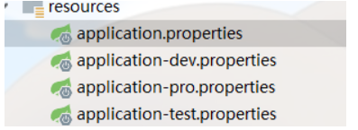
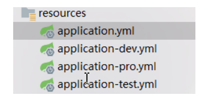

Springboot-2
Web开发
1、SpringMVC自动配置概览
Spring Boot provides auto-configuration for Spring MVC that works well with most applications.(大多场景我们都无需自定义配置)
The auto-configuration adds the following features on top of Spring’s defaults:
Inclusion of
ContentNegotiatingViewResolverandBeanNameViewResolverbeans.- 内容协商视图解析器和BeanName视图解析器
Support for serving static resources, including support for WebJars (covered later in this document)).
- 静态资源（包括webjars）
Automatic registration of
Converter,GenericConverter, andFormatterbeans.- 自动注册
Converter，GenericConverter，Formatter
- 自动注册
Support for
HttpMessageConverters(covered later in this document).- 支持
HttpMessageConverters（后来我们配合内容协商理解原理）
- 支持
Automatic registration of
MessageCodesResolver(covered later in this document).- 自动注册
MessageCodesResolver（国际化用）
- 自动注册
Static
index.htmlsupport.- 静态index.html 页支持
Custom
Faviconsupport (covered later in this document).- 自定义
Favicon
- 自定义
Automatic use of a
ConfigurableWebBindingInitializerbean (covered later in this document).- 自动使用
ConfigurableWebBindingInitializer，（DataBinder负责将请求数据绑定到JavaBean上）
- 自动使用
If you want to keep those Spring Boot MVC customizations and make more MVC customizations (interceptors, formatters, view controllers, and other features), you can add your own
@Configurationclass of typeWebMvcConfigurerbut without@EnableWebMvc.不用@EnableWebMvc注解。使用
@Configuration+WebMvcConfigurer自定义规则
If you want to provide custom instances of
RequestMappingHandlerMapping,RequestMappingHandlerAdapter, orExceptionHandlerExceptionResolver, and still keep the Spring Boot MVC customizations, you can declare a bean of typeWebMvcRegistrationsand use it to provide custom instances of those components.声明
WebMvcRegistrations改变默认底层组件
If you want to take complete control of Spring MVC, you can add your own
@Configurationannotated with@EnableWebMvc, or alternatively add your own@Configuration-annotatedDelegatingWebMvcConfigurationas described in the Javadoc of@EnableWebMvc.使用
@EnableWebMvc+@Configuration+DelegatingWebMvcConfiguration 全面接管SpringMVC
2、简单功能分析
2.1、静态资源访问
1、静态资源目录
只要静态资源放在类路径下： called /static (or /public or /resources or /META-INF/resources
访问 ： 当前项目根路径/ + 静态资源名
原理： 静态映射/**。
请求进来，先去找Controller看能不能处理。不能处理的所有请求又都交给静态资源处理器。静态资源也找不到则响应404页面
2、静态资源访问前缀
改变默认的静态资源路径
1 | spring: |
- static-path-pattern: /res/**
- 访问静态资源的路径前缀
- static-locations
- 静态资源的路径
3、webjar
自动映射 /webjars/**
1 | <dependency> |
访问地址：http://localhost:8080/webjars/jquery/3.5.1/jquery.js 后面地址要按照依赖里面的包路径
2.2、欢迎页支持
静态资源路径下 index.html
- 可以配置静态资源路径
- 但是不可以配置静态资源的访问前缀。否则导致 index.html不能被默认访问
1 | spring: |
- controller能处理/index
2.3、自定义 Favicon
favicon.ico 放在静态资源目录下即可。
1 | spring: |
3.请求参数处理
0.请求映射
- rest使用与原理
@xxxMapping；
Rest风格支持（使用HTTP请求方式动词来表示对资源的操作）
- 以前：**/getUser 获取用户 /deleteUser 删除用户 /editUser 修改用户 /saveUser 保存用户
- 现在： /user GET-**获取用户 DELETE-**删除用户 PUT-**修改用户 POST-**保存用户
- 核心Filter；HiddenHttpMethodFilter
- 用法： 表单method=post，隐藏域 _method=put
- SpringBoot中手动开启
- 扩展：如何把_method 这个名字换成我们自己喜欢的。
Rest原理（表单提交要使用REST的时候）
表单提交会带上_method=PUT
请求过来被HiddenHttpMethodFilter拦截
- 请求是否正常，并且是POST
- 获取到_method的值。
- 兼容以下请求；PUT.DELETE.PATCH
- 原生request（post），包装模式requesWrapper重写了getMethod方法，返回的是传入的值。
- 过滤器链放行的时候用wrapper。以后的方法调用getMethod是调用**requesWrapper的。**
Rest使用客户端工具，
- 如PostMan直接发送Put、delete等方式请求，无需Filter。
1.普通参数与基本注解
1.@PathVariable
@PathVariable 可以将URL中占位符参数{xxx}绑定到处理器类的方法形参中@PathVariable(“xxx“)
1 |
|
2.@RequestHeader
@RequestHeader 是获取请求头中的数据，通过指定参数 value 的值来获取请求头中指定的参数值。
1 |
|
3.@ModelAttribute
@ModelAttribute注解用于将方法的参数或方法的返回值绑定到指定的模型属性上，并返回给Web视图。
4.@RequestParam
@RequestParam主要用于将请求参数区域的数据映射到控制层方法的参数上
1 |
|
5.@MatrixVariable
@MatrixVariable
矩阵变量需要在SpringBoot中手动开启
根据RFC3986的规范,矩阵变量应当绑定在路径变量中
若是有多个矩阵变量,应当使用英文符号;进行分隔。
若是一个矩阵变量有多个值,应当使用英文符号,进行分隔,或之命名多个重复的key即可。
发送请求 8080/car/5/owner/yuefeng
1 |
|
6.@CookieValue
@CookieValue用来获取Cookie中的值
1 |
|
7.@RequestBody
@RequestBody主要用来接收前端传递给后端的json字符串中的数据的(请求体中的数据的)；GET方式无请求体，所以使用@RequestBody接收数据时，前端不能使用GET方式提交数据，而是用POST方式进行提交。在后端的同一个接收方法里，@RequestBody与@RequestParam()可以同时使用，@RequestBody最多只能有一个，而@RequestParam()可以有多个。
2.POJO封装过程
- ServletModelAttributeMethodProcessor
4.Springboot的配置文件
SpringBoot是约定大于配置的，所以很多配置都有默认值。如果想修改默认配置，可以用application.properties或application.yml(application.yaml)自定义配置。SpringBoot默认从Resource目录加载自定义配置文件。
4.1 properties文件
properties文件的配置多以key.key.key:value的形式组成，那么springboot本身有默认的一些配置，如果要修改这些默认的配置，可以在application.properties中进行配置修改。
比如：修改端口配置
1 | =8081 |
4.2yaml或者yml文件
yaml文件等价于properties文件，在使用过程中都是一样的效果。但是yml文件书写的方式和properties文件不一样。更加简洁，那么我们可以根据需要选择性的使用properties和yml文件。如果同时存在两个文件，那么优先级properties要高于yml。
语法特点如下：
- 大小写敏感
- 数据值前必须有空格，作为分隔符
- 缩进的空格数目不重要，只需要对齐即可
#表示注释
书写格式如下要求如下：key和key之间需要换行以及空格两次。 简单key value之间需要冒号加空格。
1 | key1: |
比如：
1 | server: |
注意：yml语法中，相同缩进代表同一个级别
1 | # 基本格式 key: value |
4.3获取配置文件中值
获取配置文件中的值我们一般有几种方式：
- @value注解的方式 只能获取简单值
- Environment的方式
- @ConfigurationProperties
演示如下：
yml中配置：
1 | # 基本格式 key: value |
java代码：
controller
1 |
|
pojo:
1 |
|
4.4 profile
在开发的过程中，需要配置不同的环境，所以即使我们在application.yml中配置了相关的配置项，当时在测试是，需要修改数据源等端口路径的配置，测试完成之后，又上生产环境，这时配置又需要修改，修改起来很麻烦。
properties配置方式

application.properties:
1 | #通过active指定选用配置环境 |
application-dev.properties:
1 | #开发环境 |
application-test.properties
1 | =8082 |
application-pro.properties
1 | =8083 |
- yml配置方式

application.yml:
1 | #通过active指定选用配置环境 |
application-dev.yml:
1 | #开发环境 |
application-test.yml:
1 | #测试环境 |
applicatioin-pro.yml
1 | #生产环境 |
还有一种是分隔符的方式（了解）
1 | spring: |
- 激活profile的方式（了解）
- 配置文件的方式（上边已经说过）
- 运行是指定参数
java -jar xxx.jar --spring.profiles.active=test - jvm虚拟机参数配置 -Dspring.profiles.active=dev